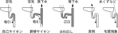
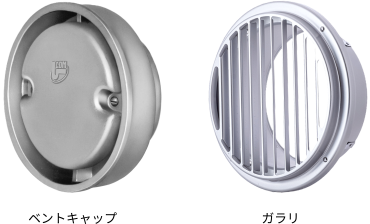

2025年
問題133 排水通気設備に関する語句の組合せとして，最も不適当なものは次のうちどれか．
（1）排水トラップの深さ ディップからウェアまでの垂直距離
（2）各個通気方式 トラップの自己サイホンの防止
（3）太陽熱給湯装置の排水管 排水口開放による間接排水
（4）トラップの封水強度 排水管内に正圧，負圧が生じた時の封水保持能力
（5）通気口の通気率 管内断面積に対する通気口の開口面積の割合
2025年
問題133 正解（3） 頻出度AAA
太陽熱給湯装置の排水管は，規定の排水口空間をとった間接排水とする．規定の排水口空間を取らない，簡易間接排水方法である排水口開放ではダメである（2025-133-1表参照）．
| 区分 | 機器名称 | |
| サービス用機器 | 飲料用 | 水飲み器，飲料用冷水器，給茶器，浄水器 |
| 冷蔵用 | 冷蔵庫，冷凍庫 ，その食品冷蔵・冷凍機器 | |
| 厨房用 | 皮むき機，洗米機，製氷器，食器洗浄機，消毒器，調理用，流し（食材を溜め洗いするシンク等） | |
| 洗濯用 | 洗濯機◎，脱水機◎，洗濯機パン◎ | |
| 医療･研究用機器 | 蒸留水装置，滅菌水装置，滅菌器，滅菌装置，消毒器，洗浄機等 | |
| 水泳プール | プール自体の排水，オーバフロー排水，ろ過装置逆洗水，周辺歩道の床排水◎ | |
| 噴水 | 噴水自体の排水◎，オーバフロー排水◎，ろ過装置逆洗水◎ | |
| 配管・装置の排水 | 貯水槽・膨張水槽のオーバフロー及び排水 上水・給湯・飲料用冷水ポンプ及び露受け皿の排水◎ 上水・給湯・飲料用冷却水系統の水抜き 太陽熱給湯装置のオーバーフロー・排水および空気抜き弁の排水 圧力水槽用逃がし弁及び貯湯槽からの排水 消火栓系統及びスプリンクラー系統の水抜き◎ 冷凍機◎，冷却塔◎，熱媒として水を使用する装置及び空気調和機器の排水◎ 上水用水処理装置の排水 | |
| 温水系統等の排水 | 貯湯槽・電気温水器からの排水 ボイラ◎，熱交換器◎及び蒸気管のドリップ等の排水◎ |
|
※ ◎印は，「排水口開放」でも良い機器．
排水口開放とは，排水が飛び散るのを嫌ったり，スペース的に困難な場合に，規定の排水口空間を取らない，簡易間接排水方法のことである．飲食関係や人が直接触れる水受け容器の間接排水としては認められていない（2025-133-1図参照）．

-(1) 排水トラップの深さ（ウェアとディップの垂直距離）は封水深という（2025-133-2図参照）．
阻集器を兼ねるトラップ以外のトラップの封水深は，50mm以上100mm以下である．阻集器は「50mm以上」で「以下」の規定なし．阻集器では100mm以上必要である（SHASE-206）．
-(2) トラップの自己サイホンによる破封を最も確実に防ぐ方法は，トラップごとに通気をとる各個通気である．
破封とは，封水が失われて，室内と排水管との間で空気が流通するようになることをいう．
トラップが破封すると排水管下流の下水ガスが室内に充満してとても居住できなくなる．又，衛生害虫も容易に侵入するようになる．
トラップの破封防止が通気設備の重大な使命である．
破封の原因と対策については，2025-133-3図，2025-133-2表参照．

| 自己サイホン作用 | 各個通気を設置する． |
| 誘導サイホン作用 | 有効な通気をとる |
| はね出し作用 | 有効な通気をとる |
| 蒸発 | 封水補給装置または栓をする． |
| 毛管現象 | 排水口で毛髪などの流出を阻止する．頻繁な掃除を行う． |
また，底面の勾配のゆるい水受け容器は排水の流速が小さいので自己サイホンを起こしにくい．また絞れ水が封水の補給水となる．
-(4)排水管内に正圧又は負圧が生じたときの封水保持能力を，トラップの封水強度という．脚断面積比（流出脚断面積/流入脚断面積）の大きいトラップは，満管になりにくく流速も遅くなるので，サイホン現象が起きにくく破封しにくい（封水強度が大きい）．2025-133-2図参照．
-(5) 通気口にはベントキャップとガラリがある（2025-133-4図）．いずれもスクリーンまたは網を設けて，害虫や鳥の侵入を防止する必要があるが，通気率（開口面積/ 管内断面積）は100％以上確保しなければならない．

出典 左側から 長谷川鋳工所
https://www.hasechuw.co.jp/product/sanitary/sanitary9.htm
西邦工業株式会社
https://seiho.com/jp/product/detail.php?pi=605